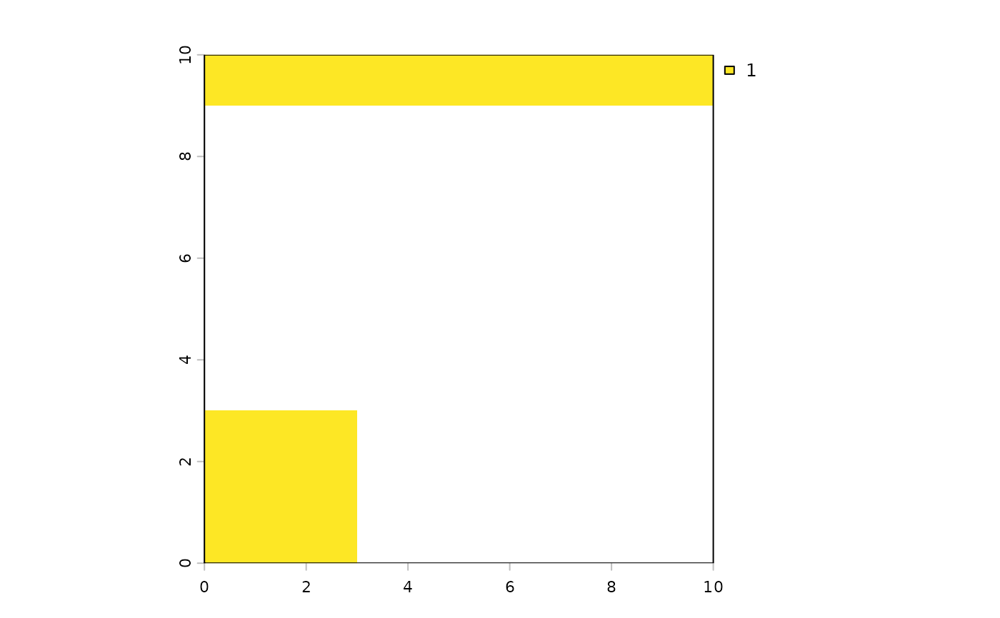

Map where any disturbance is present
Source:R/disturbancePresenceRaster.R
disturbancePresenceRaster.RdRasterizes every layer of a (possibly nested) list of disturbance layers onto
the grid of rasterToMatch, and combines them into one layer, for plotting.
Arguments
- distLayers
A
SpatVector, aSpatRaster, or a list of them, nested to any depth (seeflattenTerra()).- rasterToMatch
A
SpatRastergiving the grid.
Value
A one-layer SpatRaster named "disturbance", on the grid of
rasterToMatch: NA where there is no disturbance. Where vector layers
are present, the value is 1; a SpatRaster in distLayers contributes its
own values, and is expected to be on the same grid. Where layers overlap,
the first one in distLayers wins. NULL if there is nothing to map (no
layers, or only empty vector layers).
Examples
rasterToMatch <- terra::rast(nrows = 10, ncols = 10, xmin = 0, xmax = 10,
ymin = 0, ymax = 10, crs = "EPSG:3857")
distLayers <- list(
mining = list(mining = terra::vect("POLYGON ((0 0, 3 0, 3 3, 0 3, 0 0))",
crs = "EPSG:3857")),
roads = list(roads = terra::vect("LINESTRING (0 9.5, 9.5 9.5)", crs = "EPSG:3857"))
)
presence <- disturbancePresenceRaster(distLayers, rasterToMatch)
terra::plot(presence)
